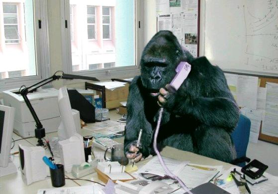

|  |
Scoring in the Low-Key Hillclimbs is simple!
Riders are divided by division. In this document "riders" includes all participants, including runners. For this year have the following divisions:
The scoring rules are inspired by basic principles. The rules themselves may be relatively complex, but the principles are relatively simple.
First, times are converted to an "effective time", adjusted by a factor derived from Low-Key results history which is different for each division:
| division | factor |
|---|---|
| men | 1 |
| women | 0.829 |
| hybrid-electric | 1.721 |
The men's and women's factors apply to conventional cyclists and runners. The hybrid-electric adjustment applies to all hybrid-electric riders, whether male or female.
Runners times are further adjusted by a factor calculated based on a running energy model designed to relatively equalize climbs for runners. This is described here. For a 12% grade, runners score the same as cyclists. This runners times are reduced for grades less than 12%, increased for grades steeper than 12%. This is in recognition that runners do better relative to cyclists the steeper the road.
The following are the runner time adjustments for the climbs in the
2013 series. A number less than 1 implies that the runners are
considered to be slower than cyclists and thus their times are reduced
before calculating their scores.
Despite its short descent, by virtue of its brevity and it's generally steep grades, Lomas Cantadas (week 7) is the most runner-friendly climb in the series. Mount Hamilton is the least runner-friendly due to its excessive length and extended descents. Portola Valley hills (week 4) is not rated due to its complexity (multiple short climbs). Runners there will be scored like cyclists.
While the adjustment is in all cases less than one and therefore helps runners relative to cyclists at the same time, it's biased towards cyclists, since this is primarily a cycling series: the exemplary runner used in estimated running times is relatively faster than the exemplary cyclist used to estimate cycling times.
Tandem time adjustments are the average of the adjustment factors for the tandem riders. So times for all-men are unchanged, all-women are multiplied by 0.829, and equal-male-female are multipled by 0.915. Hybrid-electric tandems would use the hybrid-electric time adjustment.
Effective times are used only for scoring. Times listed on the results page are actual, unadjusted times.
All divisions are scored together using effective times.
After week 1, a median effective time is determined from solo male and women riders. Each rider, including tandems, hybrid-electric, and runners receives a score equal to 100 × (median effective time / effective time).
After subsequent weeks median times are no longer used. A reference time is established for each week. These reference times are recalculated for each week after each new week, and so scores for any given week are not final until the series is over. The reference times are globally calculated based on who is present at a given week. So if a given week has stronger-than-average riders, the reference time will be longer than the median rider's time. Week 1 traditionally attracts more riders who aren't as fast versus climbs later in the series. Thus it is expected that scores posted for week 1 after that climb will be higher than the scores which will be posted for week 1 after the series is over.
In addition to a reference time, a "slope factor" is calculated for each week. This is based on the observation that scores tend to be relatively more spread out on steep climbs than on gradual climbs. This calculation is consistent with the principle that riders who ride equally well on different weeks should receive similar scores, even if one climb is steep and the other gradual.
The net score for a given week is then:
score = ( reference time / effective time )slope factor
Week-X scores (week numbers ending in "x") do not count towards overall rankings, standings, etc.
After each week of the series, the overall score for a rider is based on the rider's top scores. For a rider without ride credits, the number of counting weeks = the number of total weeks so far divided by two, rounded up. So after one week, one score counts. After three weeks, a second score counts. After five weeks, a third score counts, etc. So after five weeks total, three scores count, and a rider who'd ridden four of these weeks in the same division (for example solo male) and scored 90, 95, 100, and 105 would take his top three scores and sum them: 95 + 100 + 105 = 300 points.
Ride credits can be acquired in three ways:
This last point needs to be clarified. Ride credits are calculated separately for each division. So when riding as a solo rider, ride credits are accumulated for riding a tandem, and when riding a tandem, ride credits are accumulated for riding solo. This is done to encourage riders to try different things, for example riding a tandem without wrecking chances in the solo ranking.
Once ride credits are tallied, the number of counting scores may be reduced. For one ride credit, the number of counting scores is reduced by one, while for three ride credits, the number of counted scores is reduced by two. Any further increase in ride credits has no effect. After counting the credit-adjusted number of scores, the total is multiplied by the ratio of the base number of counting scores to the credit-reduced number of counting scores. Of course at least one score must count, so after week two a rider who scored one week and volunteered the next has that one score count, at least until week 3 when the ride credit from volunteering may be applied.
So consider the rider described previously with results of 90, 95, 100, and 105 in four of the five weeks. But instead of assuming the rider stayed home on the fifth week, assume the rider volunteered that week. Then the rider has one ride credit. One ride credit means the number of counting scores can be reduced by one. So instead of counting three scores for five week, the rider can count two scores. These would be the 100-point and 105-point weeks which would be counted, the 90-point and 95-point weeks discarded. Since the rider is counting only two instead of the conventional three weeks, the net score needs to be pro-rated by a factor 3/2. Thus the total score, instead the 300 points calculated earlier, becomes (100 + 105) × (3 / 2) = 307.5 points.
Another example: suppose after five weeks a rider rode tandem one week, scoring 90 points, but additionally rode solo two weeks, scoring 100 and 110 points as a solo rider. The other two weeks the rider stayed home. The rider thus has one ride credit as a solo rider (for the week ridden tandem) and two ride credits as a tandem rider (for the weeks ridden solo). Week scores can be removed after one ride credit and again after three ride credits, so one or two ride credits each reduce the required score number by one. Thus the rider counts two instead of three scores in both the tandem and solo divisions, then multiplying the sum by 3/2. The rider's tandem score is thus 135 and the rider's solo score is thus 315.
Summary of how ride credits reduce the number of required weekly scores:
| ride credits | bonus scores |
|---|---|
| 0 | 0 |
| 1 or 2 | 1 |
| 3 or more | 2 |
It isn't 1:1 since it is desired that the overall series winner be consistent and versatile in climbing, and if a rider could rank at the top by doing, for example, a single climb and volunteer a lot, the ranking might not represent either. Volunteering can always potentially benefit team score, however.
Team scores are calculated using the top three riders in each team for a given week. Overall team score is calculated using the same number of weeks as individual overall scores. Riders on the same tandem contribute individually to the team score for the week. So the three riders may, for example, include two rides on the same tandem (scoring the same) and one solo rider. Any riders for a given team who are not among the top three scoring riders for the team have their score discarded for the purpose of team scoring.
The scoring is done in this way so smaller teams aren't penalized for not having a large number of riders, yet large teams aren't penalized for including slower riders. If a team of three fast riders adds a slower rider that slower rider's scores will be discarded rather than count against the team. On the other hand, a team of three fast riders will not be penalized for not recruiting slower riders from other teams.
A rider's team can change during the year: the team receiving the rider's scores for a given week is the team the rider rode with that given week. If the rider changes teams the next week, the prior team keeps the points for when the rider was on that team.
Volunteers who are unable to ride do not contribute to the week score for a team.
Week-X scores (week numbers ending in "x") do not count towards overall rankings, standings, etc, for teams or individuals.
For team overall scores, a new set of scores are determined for the team, one for each week. The difference here is that if a team had a volunteer in a given week who rode at least one other week but did not ride the week he volunteered, that volunteer contributes his median score from other weeks to the team's scores for that week. Thus a team which had two riders in a given week scoring 110 and 120 points, but had a third rider who coordinated or volunteered the week and who had a median score in other weeks of 100 points, the team would score 330 points for that week toward the overall rankings, but would score only 230 points toward the team rankings for the week itself.
After a team has this new set of scores for each week, a number are counted equal to the total number of weeks so far dividided by two and rounded up. So if there have been five weeks so far, the top three scores for each team are summed.
A rider who volunteers has his median score for the series go to the team he rode for preceding the week he volunteered. Or, if he rode only weeks following the volunteer week, the median score goes to the team the rider joined his first week riding.
The most improved from last year is calculated by comparing the difference of your median score from this year to your median score from last year, using scores from solo men's and women's divisions (new for 2011). So bad luck on one or two rides won't affect your result here, much. This classification is limited to those who rode or volunteered in at least 3 climbs from both this year and the year prior.
This is a rider who generally scores most consistently during the series, given preference for riders who've done more climbs since it's harder to keep consistent over a larger number of climbs.
The score is based on the natural logarithm of the scores. Given a set of scores, we calculate the standard deviation of the population. But since riders doing fewer rides are more likely to get a low standard deviation by luck, we add in two standard errors of the estimate of the "true" standard deviation of the riders probability distribution for the log of the scores. I thus multiply this calculated standard deviation by 1 + ( 8 / [ N - 1 ] ), where N is the number or rides for the rider. Volunteer weeks and weeks riding a tandem are not included in the calculation, and the rider must have at least half as many times as there are weeks so far in the series (the formula is slightly changed from 2011 to 2012 to further acknowledge the increased difficulty of maintaining a tight score distrobution over more weeks).
This is a "fun" ranking based on body masses optionally reported by riders (enter your body mass here). It is the maximum rate of climbing (VAM) for a rider in any week he/she participated multiplied by the grass altitude gained by a climb divided by the effective time (division-adjusted), reported in kg m / sec. This is closely correlated with average power, but it's grossly oversimplified, so don't take it too seriously. It's just a fun ranking to give the big guys a chance to put the little climbers in their place. Riders are ranked separately by division, although divisions are combined on the same table. Change during 2012: Now effective time, rather than raw time, is used.
In the age-adjusted ranking, riders have their effective times adjusted by a factor empirically derived from half-marathon running times. The numbers are tabulated for integer year ages, but fractional year ages are also also used here, interpolating on the integer year values. Tandem riders have their factors averaged, consistent with the principle that tandem riders always receive the same score in a given week.
The adjustment factors were compiled by Charles Howe:
The 100% club consists of riders who've climbed, or gotten volunteer credit for, every climb in the series. Either activity helps make the series a success. Thanks!!!
Sometimes Low-Key does special competitions, "No-Key" climbs which do not count towards any overall standings. These weeks have an "X" at the end of the climb or week number. Examples might be climbs added at the end of the schedule or bonus climbs in addition to the main climb.